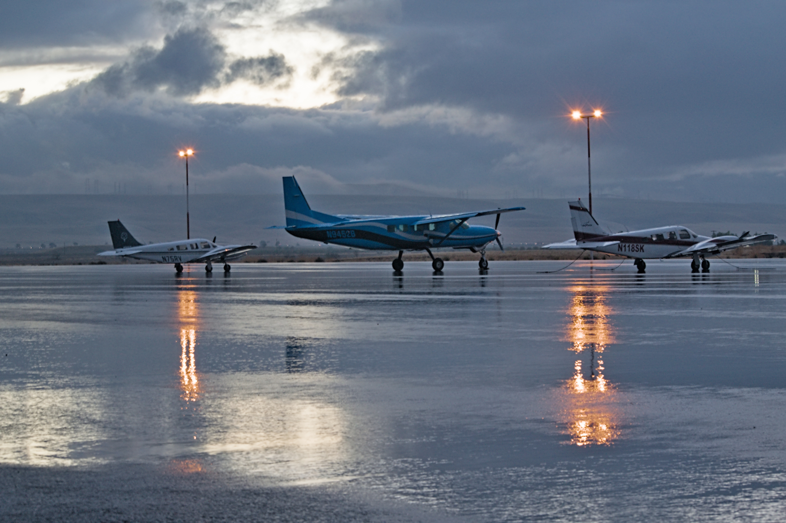
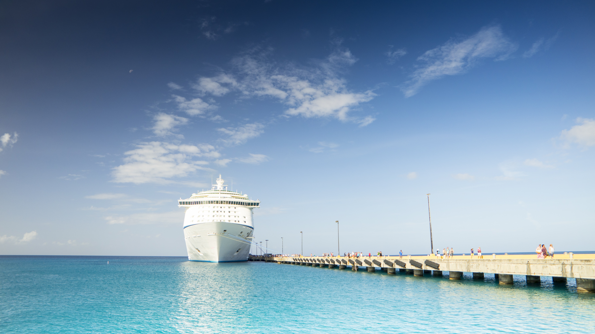

TRANSPORTATION
Find the best way to get around Taniti.
GETTING TO TANITI

AIR
Taniti's airport serves small jets and propeller planes, with expansion planned for larger jets.

CRUISE SHIP
Cruise ships arrive in Taniti once a week and dock in Yellow Leaf Bay.
GETTING AROUND TANITI
PUBLIC BUS
Serves Taniti City from 5 a.m. to 11 p.m. daily.
TAXI
Taxis are available in Taniti City.
RENTAL CAR
Rental cars are available from an agency near the airport.
PRIVATE BUS
Provides transportation to areas outside Taniti City
BICYCLE
Bikes and helmets are available from several vendors.
Helmets are required when riding bicycles.
WALKING
Taniti City is flat and walkable. Merriton Landing is also easy to explore on foot.